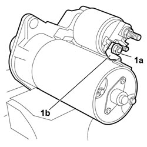
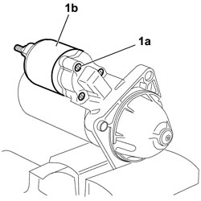
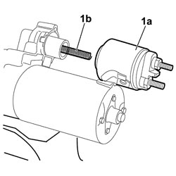
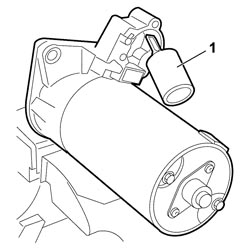

5520B18 STARTER MOTOR SOLENOID - R+R WITH MOTOR REMOVED
- Path
- Procedures > 55 ELECTRICAL EQUIPMENT > 5520 ENGINE STARTING > 5520B STARTER MOTOR AND COMPONENTS > 5520B18 STARTER MOTOR SOLENOID - R+R WITH MOTOR REMOVED
- Kind
- repair procedure (removal / refitting; the operation number is the code)
- Applies to
- engines: 1.9 JTD 8v, 1.9 JTD 16v; all production periods
- Interactive page
- https://sloeber94.github.io/elrnDB-fCrm/en/#/194000708
Applies to: engines: 1.9 JTD 8v, 1.9 JTD 16v; all production periods
 Removing
Removing
 Refitting
Refitting- Remove the upper engine protective cover.
- Turn the ignition key to the OFF position.
- Disconnect the negative battery terminal.
Description | Connector | |
|---|---|---|
BATTERY |
Op. 5530B52 BATTERY SUPPORT/DRIP TRAY - R.R
Op. 7055B54 UNDER ENGINE PROTECTION/GUARD - R.R.
Op. 5520B10 STARTER MOTOR - R+R
- Place the starter motor on the bench.
1. Undo the fixing nut (1a) for the electrical connection (1b).

Applies to: engines: 1.9 JTD 8v, 1.9 JTD 16v; all production periods
1. Undo the three fixing bolts (1a) for the solenoid coil (1b).

Applies to: engines: 1.9 JTD 8v, 1.9 JTD 16v; all production periods
1. Extract the solenoid coil (1a) and keep the internal spring (1b).

Applies to: engines: 1.9 JTD 8v, 1.9 JTD 16v; all production periods
1. Turn the moving part of the solenoid and extract it from the starter motor casing.

Applies to: engines: 1.9 JTD 8v, 1.9 JTD 16v; all production periods
Refitting
Removing- Check that the coil, the spring and the moving part of the starter motor solenoid are not damaged.
- Fit the moving part of the solenoid on the starter motor casing, rotating it appropriately.
- Fit the spring and the solenoid coil and secure it using the three fixing bolts.
- Connect the electrical connection for the solenoid and fasten it using the nut.
Op. 5520B10 STARTER MOTOR - R+R
Op. 7055B54 UNDER ENGINE PROTECTION/GUARD - R.R.
Op. 5530B52 BATTERY SUPPORT/DRIP TRAY - R.R
- Reconnect the negative battery terminal.
Description | Connector | |
|---|---|---|
BATTERY |
- Fit the upper engine protective cover.